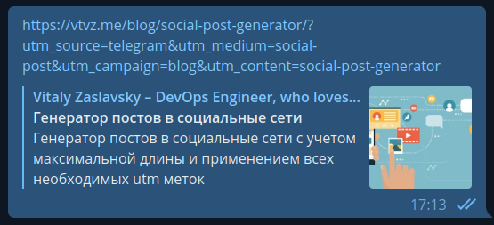
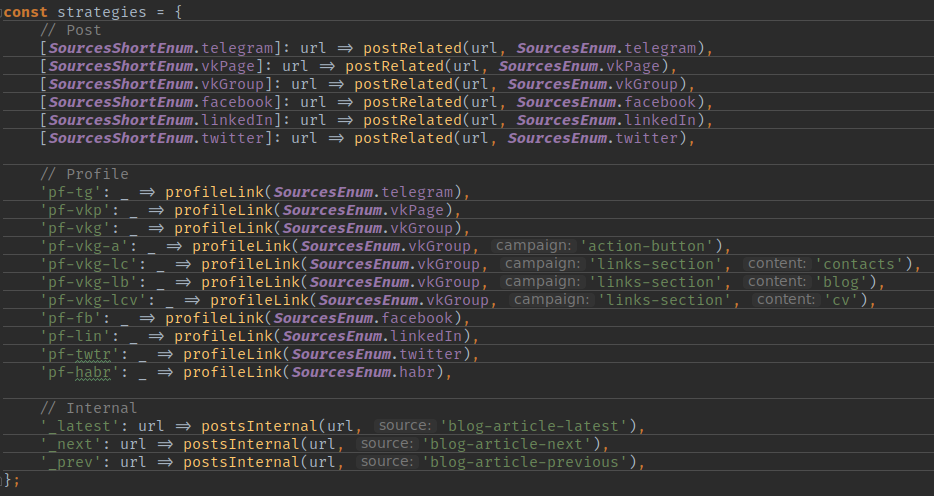

Решил я тут собрать побольше статистики по посетителям. Хотя Яндекс.Метрика очень даже неплохо с этим справляется, но хотелось бы иметь более управляемый механизм, в котором можно было разделить не только соц. сеть, из которой пришел посетитель, но и какую из ссылок он нажал.
Или например, сколько человек посмотрело статью из секции “Latest Article” на главной странице, сколько перелистнуло на следующий пост, и так далее. Выбор очевиден – нужно использовать UTM метки. Они очень распространены в рекламной части бизнеса, но их можно использовать и для простой аналитики. Но тут есть одна проблемка…
Постановка задачи #
Проблема в том, что эти метки очень массивные. Вот к примеру, одна из возможных ссылок на пост в социальной сети выглядит следующим образом:
https://vtvz.me/blog/social-post-generator/
?utm_source=_telegram
&utm_medium=social-post
&utm_campaign=blog
&utm_content=social-post-generator
Это 96 дополнительных символов! Хотя многие соц. сети хорошо с этим справляются. Например, в VK такие ссылки ограничены одной строкой. А в Twitter и LinkedIn есть свой укорачиватель. Но вот Телеграм так не умеет.

Тем не менее, помимо постов есть еще и ссылки на сайт в профилях соц. сетей. В ВК, например, у меня целых 3 места, ведущих на главную страницу. И эти длиннющие ссылки немного пугают и уродливо выглядят. Короче, задача в следующем: сделать эти ссылки простыми и эстетичными.
Решения #
Укорачиватель ссылок #
Я уже давно пользуюсь сервисами, которые делают из монстров конфетку. Вот например Bitly неплохо с этим справляется. Вот что он сделал со ссылкой, которую я указал ранее:
https://bit.ly/vtvz-tg-post-generator
Уже гораздо лучше.
НО! Теперь эта ссылка не ведет на мой сайт. Она ведет на bit.ly, который уже кидает куда надо. Проблема ли это? Для меня да. Мой сайт – моя визитная карточка, которая должна явно указывать, кому она принадлежит. Так что, это отметается сразу.
Свой укорачиватель ссылок #
А почему бы самому не укорачивать ссылки и публиковать уже их? Это решает проблему выше, но создает еще несколько.
- Его нужно сделать. Это дополнительное время на реализацию целого компонента системы. Сложность создает тот факт, что этот сайт статический, собран из обычных html страничек, сгенерированных с помощью Jekyll, который написан на Ruby, который я не знаю… Ну вы поняли :grin:
- Обычные укорачиватели перекидывают тебя на другой сайт используя HTTP 301 код. Но мы не можем отдавать этот статус клиенту, потому что статические сайты дают либо 200, либо 404. А вот ВК не умеет обрабатывать такие страницы.
- Придется генерировать целую пачку укороченных сслылок для каждой записи в блоге. Это значительно повышает ошибку человеческого фактора, значительно усложняет систему и захламляет проект. (Эта проблема справедлива и для предыдущего метода)
- Это сложно автоматизировать имеющимися инструментами.
Вывод: тоже отбрасываем.
Упаковка меток #
Я уверен, что этот метод использовался ранее, и что я изобрел велосипед. Но результат, по-моему, получился просто невероятным. Принцип работы в следующем:
Вместе со ссылкой передается один единственный query параметр, на основании его в url страницы применяются все необходимые utm метки. Все это должно произойти ДО инициализации инструментов аналитики.
Выглядит это следующим образом:
- Человек открывает ссылку
https://vtvz.me/blog/social-post-generator/?utm=tg - Она распаковывается в
https://vtvz.me/blog/social-post-generator/ ?utm_source=_telegram &utm_medium=social-post &utm_campaign=blog &utm_content=social-post-generator - Запускаются Яндекс.Метрика и Google Analytics
В итоге удалось упаковать 96 символов в 7! Вот как это работает…
Реализация #
Предупреждение!
Весь дальнейший код написан на версии JavaScript, который поддерживается не всеми браузерами. Для совместимости со старыми версиями я использую webpack + babel. Но примеры достаточно просты, чтобы транспилировать их в классический JS.
Наш код должен работать следующим образом:
- Вытянуть
utmпараметр из query адреса; - Сгенерировать source, medium, campaign…
- Удалить параметр
utm; - Применить метки из пункта 2;
- Заменить текущий url на новый.
Выглядит это так:
У нас есть карта стратегий обработки. Это объект, в ключах которого возможные utm сокращения, а в значении – функция, которая генерирует все необходимые метки.
const strategies = {
'tg': (url) => {
const [collection, slug] = url.pathname.split('/').filter(_ => _);
const data = {
source: '_telegram',
medium: 'social-post'
}
collection && (data.campaign = collection);
slug && (data.content = slug);
return data;
}
};
В этом случае функция получает текущий адрес, на основании которого строит кампанию и контент. Эта магия применима в моем случае. В вашем может быть что-то другое.

У меня карта стратегий выглядит вот так
Теперь нужна функция, которая сделает всю остальную работу:
/**
* @param {Window} w
* @param {Document} d
*/
const utmResolver = (w, d) => { // В качестве параметров передаются window и document
// 1. Парсим ссылку и вытягиваем utm параметр
const url = new URL(w.location.toString());
const utm = url.searchParams.get('utm');
if (null === utm || '' === utm) {
return;
}
// В случае отсутствия стратегии просто ничего не делаем
let strategy = strategies[utm];
if (undefined === strategy) {
return;
}
// 2. Генерируем значения меток
const {
source,
medium,
campaign,
content,
} = strategy(url);
// 3. Удаляем utm
url.searchParams.delete('utm');
// 4. Применяем параметры
url.searchParams.append('utm_source', source);
url.searchParams.append('utm_medium', medium);
url.searchParams.append('utm_campaign', campaign);
content && url.searchParams.append('utm_content', content);
// 5. Обновляем URL
w.history
? w.history.replaceState({}, d.title, url.toString())
: w.location.replace(url.toString());
}
Нам остается только вызвать эту функцию:
utmResolver(window, document);
Напоминание!
Напомню, что это должно произойти ДО инициализации сборщиков статистики в синхронном потоке! Нарушение этих правил может привести и приведет к искажению результатов.
Благодаря этому ссылки стали куда лаконичнее, чем изначально. Выбранный мною способ не является единственно верным. Есть несколько альтернатив, как передать стратегию:
vtvz.me/.../?u=tgvtvz.me/.../?_=tgvtvz.me/.../?=tgvtvz.me/.../?tgvtvz.me/.../#tg
Ничто не мешает вам модифицировать приведенный выше скрипт под свои нужды.
Мне не удалось протестировать это дело в больших масштабах, но текущие данные показывают правдивые результаты. Так или иначе, если что-то пойдет не так – я сообщу.
А пока, спасибо за внимание :grin: Если возникают вопросы, не стесняйтесь задавать их мне по любому доступному каналу, пока комментарии не появились :fox: